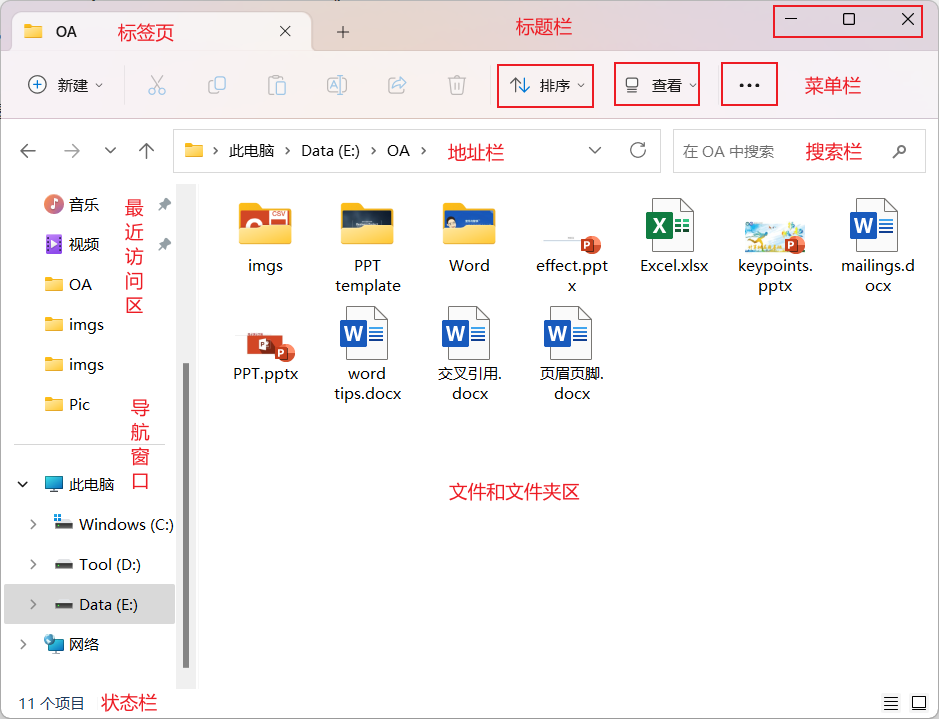
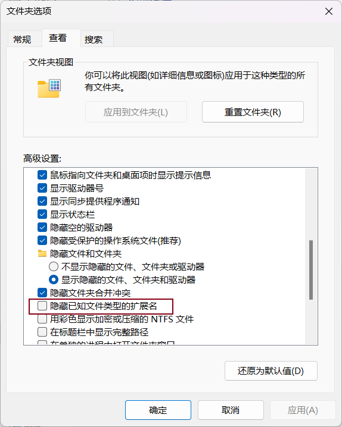

Window10操作系统
Window10
- 内容
-
Windows的发展历程Windows 10的特性Window 10的基本操作Window 10的系统设置Windows 10的资源管理Windows 10平台的管理和维护
- 桌面
-
桌面图标：系统图标和快捷方式图标；大部分都是快捷方式图标，左下角带有小箭头开始菜单：开机、注销、重启动、用户登录、设置、程序列表任务栏：搜索、快速启动、时间、输入法
- 窗口
- .泛指文件视图窗口|资源管理器窗口、浏览器窗口、终端窗口等各种视窗
- .是Win系统可视化的直接体现
-
介绍
.标题栏：最大化、最小化、窗口化；单击标题可以激活该窗口，多窗口的情况下，活动窗口位于最上层；单击并按住鼠标拖动，可以移动窗口
.选项卡|标签页
.导航窗口
.地址栏：地址、搜索
.工具栏、菜单栏
.资料|内容区
 窗口主要区域分布 操作.缩放
.移动
.重叠
.平铺
.分割：2分、4分
.关闭：Alt + F4
.切换：Alt + Tab
- 程序
- . 程序也是一个窗口，很多操作和普通窗口类似，如最大化、最小化、关闭、移动、切换等
-
安装启动
.双击桌面上的程序快捷方式图标【需要创建程序的快捷方式】
.从"开始"菜单程序栏
.从底部状态栏快速启动【需要将程序固定到菜单栏】
关闭：Alt + F4切换：Alt + Tab卸载：从设置面板中安全移除 - 创建程序的快捷方式
- 创建程序的快速启动在任务栏
- 输入法
- .默认切换输入法：Ctrl + Space
- .可以根据个人习惯设置
- .部分程序的快捷键可能和系统有冲突，注意规避
- .注意区分半角和全角
- 使用记事本创建文本文件，切换输入法，编辑文字，体会全角半角的区别
- . Win + I：打开设置面板
- . Windows 10 操作系统允许用户进行个性化设置，用户可以设置个性化任务栏、个性化开始菜单，还可根据自己的喜好设置主题、设置屏幕保护程序、定制窗口颜色和外观等
-
系统 屏幕：分辨率、缩放、亮度声音通知网络和Internet 网络连接VLANVPN个性化 背景颜色屏幕保护主题任务栏应用 卸载其它管理账户 个人信息登录用户时间和语言 时间设置输入法设置
- 资源管理器 Explore
- .快捷键 Win + E
- .集中管理文件和文件夹，如：查看、查找、复制、移动、删除等操作，是操作系统的基本功能之一
- .区域划分和普通窗口类似
-
选择
.单选：单击
.多选：连续选择Shift + 拖到鼠标、分散选择Ctrl + 单击鼠标
.全选：CTRL + A
查看信息：右键，选择"属性"创建快捷方式：右键→发送到→桌面快捷方式压缩|打包解压：为避免混乱，不要直接把文件内容解压到当前目录中，应该解压到对应的文件夹 -
资源管理器 Win + E 操作 快捷键 说明 全选 Ctrl + A 选择当前目录下所有文件；All 重命名 F2 要先选择文件 复制 Ctrl + C 创建一个新的同样的文件，默认情况下文件名带有copy字样，需重命名；Copy 剪切 Ctrl + X 从当前位置移到另外一个位置 粘贴 Ctrl + V 将复制的或剪切的文档粘贴到当前位置 删除 Del 删除文件到回收站；Delete 彻底删除 Shift + Del 彻底删除文件，谨慎操作；也可以设置回收站属性，不中转而直接删除 创建新文件夹 Ctrl + Shift + N 创建一个新文件夹；New - 2分窗口；快速开启2个资源管理器，分别拖到标题栏到桌面左右两侧至出现高亮提示后松开
- 文件
- .文件通常用以实现某种功能或某个软件的部分功能。这些信息最初是在内存中建立的，然后以用户给予的名称转存在磁盘上，以便长期保存。 文件的基本属性包括文件名、大小（存储容量）、类型、创建和修改时间等。文件通过 “文件名”，以便与其他文件相区别。对一个文件所有的操作（如复制、改名、删除等）都是通过文件名进行的。
-
文件命名格式
.文件标识由文件名和扩展名两部分组成，它们之间以小数点分隔。格式为：
〈主文件名〉[.〈扩展名〉］
.Windows 10规定，主文件名是必须有的，而扩展名是可选的，不是必须有的
.系统默认不显示扩展名，为了方便，通常设置为显示：在资源管理器中，单击菜单栏的"查看"→"显示"→"文件扩展名"或单击"更多"→"选项"→"查看"，取消隐藏
 显示文件扩展名 命名规范.最多可有255个字符
.可以使用汉字和空格，但文件名第一个字符不能为空格，文件名其他位置中可以包含有空格，命名还禁用下列特殊符号： ? \ / : * " < > |
.不能利用大小写区分文件名。例如，COMPUTER.DOCX与computer.docx是同一个文件
.文件名中可以使用多个分隔符（即小数点），但文件名最右一个分隔点后面的部分才是扩展名。例如：computert.BAS.txt.docx 只有最后一个分隔符的后面部分（即.docx）才是扩展名
文件类型.可执行文件：.exe .com .bat
.文本文件：.txt
.办公文件：.docx .elsx .pptx .pdf
.多媒体文件：音频.mp3、视频.mp4
.图像文件：.jpg .png .gif .webp
.编程语言文件：包括源文件、目标文件、汇编文件等等；.c .cpp .java .js .html .css
.其它文件：隐藏文件
- 文件夹
- .管理文件和文件夹
- .允许文件夹嵌套
- .文件夹命名同文件，但文件夹名不采用扩展名
- .每个磁盘都有一个根文件夹，根文件夹是在磁盘格式化时自动建立的，而其他一般的文件夹则是由用户按需要来建立的
- .不在同一文件夹下的子文件夹或文件可以同名，但在同一文件夹下不允许有相同的子文件夹名和文件名
- 路径
-
绝对路径：从盘符开始，如：D:\Doc\tmp.txt相对路径：从当前目录开始，如Doc\tmp.txt全文件名：绝对路径 + 文件名，如D:\Doc\tmp.txt
- 文件和文件夹操作
-
选择移动剪切复制粘贴重命名：F2查看属性：万能的右键快速查看路径：单击地址栏创建快捷方式：右键发送到桌面快捷方式
- 任务管理器
- .Ctrl + Alt + Del
- .任务管理器提供了一种监视系统性能的简便方法。通过它来查看计算机中当前正在运行的应用程序、进程、服务、性能及用户
- ."进程"选项卡，可以查看系统当前运行进程的详细信息，如用户名、CPU占有率、进程ID等信息
- ."服务"选项卡，可以查看当前系统服务的工作状态等详细信息
- ."性能"选项卡，可以了解系统当前的性能情况。对话框中用图表的形式详细显示了当前系统CPU使用率和内存使用情况，其显示的内容是动态更新的
- 磁盘管理 - 拓展
- .磁盘清理
- 系统备份 - 拓展
- 系统恢复 - 拓展
| 快捷键 | 说明 | 示例 |
|---|---|---|
| Fn + Esc | 切换功能键 | 使用F1，需要按Fn；如想直接使用，可以切换为功能优先 |